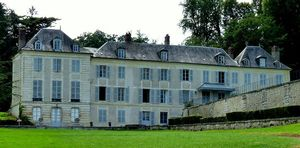
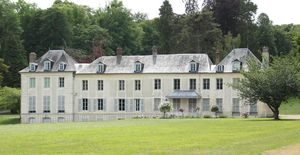

Recensement Jean-Claude Truffet
| Département | 27 — Eure |
| Canton | Vernon |
| Commune | St-Just |
| Type d'édifice | Château |
| Période d'origine | XVII |


ST-JUST, un premier château est construit au XIIIe siècle. Vers la fin du XVIe siècle, Jacques de Croixmare fait édifier une nouvelle demeure. Un état des biens du fief de Saint-Just, dressé en 1608. En 1654, les derniers descendants de la famille de Croix-Mare vendent le domaine à Jean de Savary, écuyer, secrétaire du Roi et grand maître des Eaux et Forêts de Normandie. Jean de Savary et ses descendants transforment le parc en jardin à la française. Le plan de 1744 donne une idée du château et de son parc au milieu du XVIIIe siècle. En 1775, vendu au duc de Penthièvre, également propriétaire du château de Bizy, à Vernon. Il acquiert aussi le domaine voisin (dit château du Rocher), jusqu'à la propriété distincte. L'hospice fonctionne jusqu'à la mort du duc de Penthièvre, en 1793. Le domaine est ensuite vendu comme bien national. Propriétaire de 1795 à 1798, Sébastien-Gilles Huet de Guerville fait inhumer son épouse dans le parc, en réutilisant les éléments du mausolée de Lancelot de la Garenne, provenant de l'église de Mercey. En 1805, Victor Fanneau de la Horie, propriétaire depuis 1798, revend le château au chevalier Suchet, qui le revend à son frère, maréchal et duc d'Albuféra. Gabriel Suchet, receveur des droits généraux de Normandie, puis conseiller d'état, commence par replanter l'avenue qui mène au château en 1810 ; aux ormes du XVIIe siècle, il substitue des peupliers.
ST-JUST, le duc transforme le logis en hôpital et maison de repos pour les vieux serviteurs, à cette fin, le bâtiment subit d'importants aménagements. Dans le parc, il fait édifier la laiterie, une fabrique et la glacière, il fait encore construire le grand commun et une infirmerie (bâtiment aujourd'hui intégré dans la propriété voisine du Rocher) à partir de 1816, le maréchal entreprend de grands travaux à Saint-Just, distribution et décor du rez-de-chaussée du logis par l'architecte Lacornée, réameublement, nouveau dessin du parc. L'ensemble des bâtiments est remis en état. Suite au décès du maréchal en 1826, sa veuve divise la propriété et vend le domaine voisin du château du Rocher, composé de la chapelle, le "pavillon d'Osmont", l'infirmerie et une partie du parc à l'anglaise ; il redevient alors distinct du château de Saint-Just. Depuis 1885, le château est aux mains de la même famille, qui s'est attaché à remettre le parc en état : en 1893, l'avenue est replantée, en platanes ; en 1905, la pièce d'eau est curée ; les goulettes, disparues sous le calcaire et la terre, sont dégagées et remises en eau (1935). En 1904, l'aile gauche du château est abattue. Les bois attenants, ou grand parc, autrefois partie intégrante du domaine, appartiennent aujourd'hui à un autre propriétaire. Logis en pierre calcaire de plan rectangulaire régulier ; communs en pan de bois et calcaire ; glacière avec puits de sept mètres et coupole en brique ; couvert en tilleuls ; terrasse maçonnée ; cressonnière ; miroir d'eau ; jardin régulier au XVIIe siècle ; jardin irrégulier à partir du XIXe siècle ; lucarne à croupe.
famille de Croix-mare
"
St-Just gps 49° 06' 39" nord, 1° 25' 53" est